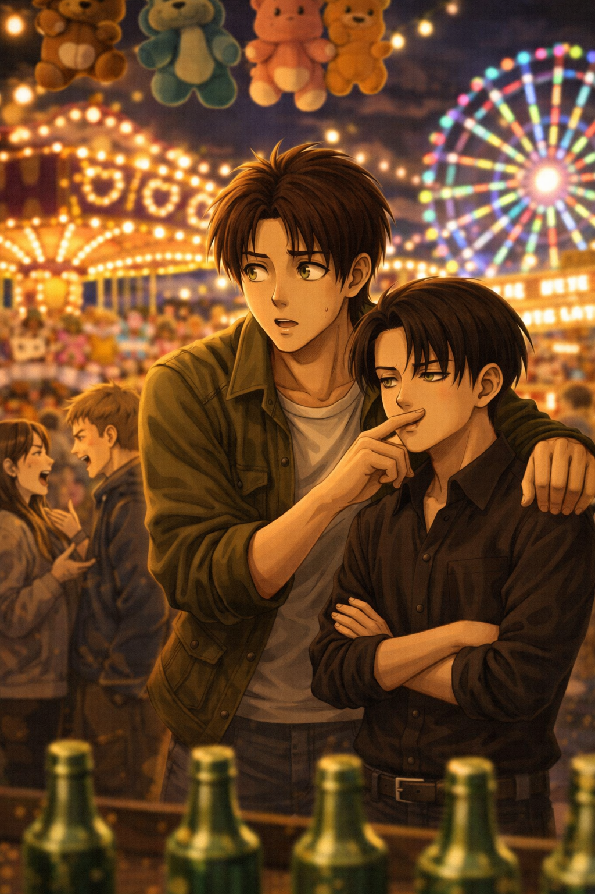

Bright noise
Levi — POV

They hadn’t planned anything.
That was probably why it felt so easy.
The amusement park rose ahead of them in a blur of color and sound, lights not yet fully lit but already humming beneath the late afternoon sky, like the place was breathing in anticipation.
Music spilled from somewhere indistinct—something cheerful, something a little too loud—and the air carried everything at once: sugar, oil, caramel, something citrusy, something warm and fried and impossible to name individually.
Eren slowed without meaning to.
Levi noticed.
Not because Eren said anything—he rarely did when something caught him like that—but because his steps shifted, just slightly, just enough to break the rhythm they had been walking in.
Levi didn’t stop. He let the distance stretch by half a pace, then closed it again, fingers brushing against the back of Eren’s hand in passing.
Not holding. Not yet. Just there.
“You’re staring,” Levi said, quiet, almost lost under the noise.
Eren huffed a laugh. “Yeah. So?”
Levi glanced at him, briefly, and then back ahead. “Try not to look like it’s your first time outside.”
“It kind of is.”
That made Levi’s mouth twitch.
They passed under the entrance arch together, swallowed into the motion of people—families, couples, groups of friends already laughing too loudly—and just like that, the world narrowed into something brighter, warmer, closer.
Eren turned slowly where he stood, taking everything in like he didn’t want to miss a single piece of it.
Lights strung overhead in long, glowing lines. Game stalls with ridiculous prizes hanging just out of reach. The sharp ringing of bells every time someone won something they definitely didn’t need. A carousel turning lazily in the distance, all gold trim and painted horses rising and falling in a rhythm that felt almost hypnotic.
Levi watched him more than he watched anything else.
“Where first?” Eren asked, still looking around.
Levi shrugged. “You dragged me here.”
“I didn’t drag you.”
“You insisted.”
“That’s not the same thing.”
Levi gave him a look.
Eren grinned.
And then he reached for him—this time properly, fingers slipping into Levi’s like it had always been that simple—and pulled.
Levi let himself be pulled.
They didn’t make it far before Eren drifted toward one of the stalls, pulled less by intention than by curiosity, the kind that caught him mid-step and redirected him without warning. It wasn’t anything special—just one of those brightly lit game booths with glass bottles and thin rings stacked in uneven piles, oversized plush prizes looming overhead like they belonged to another scale entirely.
Eren slowed, watching.
Levi followed his gaze, then the stall, then the absurd size of the prizes, and exhaled quietly through his nose.
“You win one of those,” he said, not looking at him, “you’re finding somewhere else to put it.”
Eren glanced at him, a flicker of amusement already there. “You’re assuming I’m going to try.”
“I’m assuming you’re going to win if you do.”
That was enough.
Eren stepped closer to the counter, leaning in just slightly, attention sharpening—not in a tense way, not like it mattered, but in that familiar way of his where everything else blurred at the edges when something caught his interest.
Levi stayed beside him, close without making it obvious, watching the same throws, the same misses, the way the rings never quite settled the way they should.
“They’re lighter than they look,” Eren murmured, mostly to himself.
Levi tilted his head a fraction. “Or the bottles are wider.”
“Hm.”
He played, eventually—not impulsively, not immediately, but because he had already decided he would.
It took him a few tries, not rushed, each one slightly more adjusted than the last, until one landed clean enough to make the bell ring out sharp and triumphant over everything else.
For a second, Eren just blinked, like he hadn’t expected it to work yet, and then he laughed under his breath as the vendor handed over a prize that was, predictably, far too big.
Levi looked at it.
Then at him.
“Congrats, that’s not staying.”
“We’ll see.”
Levi didn’t argue. He didn’t need to.
He just watched the way Eren adjusted his grip twice within the next few steps, the way the thing got in the way almost immediately, the way he refused to admit it. Eren was annoyed quickly. He'd get rid of it sooner or later, Levi would bet on it.
They moved on without really deciding to, folding back into the current of people, letting it carry them past more lights, more music, more smells that changed every few meters. Something sweet gave way to something salty, then to something warm and spiced, the air thick with it, alive in a way that made everything feel closer than it was.
At some point, Eren bumped into him, half because of the crowd, half because he didn’t bother avoiding it.
Levi steadied him without thinking, hand settling briefly at his side, fingers pressing just enough to ground him before letting go again—except he didn’t, not entirely.
His hand lingered, shifting slightly lower as they walked, more natural than intentional.
Eren didn’t comment on it.
But he leaned into it, just a little.
They passed a couple mid-conversation, close enough that their voices slipped through the noise in pieces, and Eren’s attention tilted toward it almost immediately, subtle in the way only someone used to doing it could be.
Levi noticed, too.
He didn’t stop him. Living with a spy had some repercussions, and eventually, he became curious too. At least, that was his excuse. If anything, he angled slightly with Eren, just enough to catch the same fragments, the same unfinished sentences that hinted at something just beginning to unravel.
“…you said that already—”
“I know, but—”
“No, you don’t—”
Eren exhaled quietly, like he was filing it away.
Levi glanced once, brief, measuring, then back ahead.
“They’ll fix it,” he said, low enough that it barely existed.
Eren tilted his head. “Sheeesh.”
“Oi, you want to fight, too ?”
That earned him a soft, almost absent laugh.
They didn’t stay long enough to hear the end, but Eren's imagination made up something most likely way funnier than the real story happening anyway.
Eren’s attention shifted again—easily, naturally—caught this time by something closer, something immediate.
Food. Of course.
He didn’t hesitate, already ordering something dusted in sugar before Levi could say anything about it, not that he would have.
He just watched, as always, as Eren took the first bite too soon, as the sugar clung to his fingers, to the corner of his mouth, catching the light every time he turned his head.
Levi reached for him without interrupting.
His thumb brushed lightly at Eren’s lip, slow enough to be intentional, brief enough to pass as nothing if you didn’t look too closely.
Eren paused mid-sentence, eyes flicking toward him, but Levi had already moved, catching his hand instead, turning it just slightly.
Sugar clung to Eren's fingers.
Levi didn’t rush it.
He dragged his thumb once across them—more out of habit than necessity—and then, without breaking eye contact this time, leaned in just enough to press his mouth briefly against Eren’s fingertip.
Not a kiss.
Not quite.
Just enough tongue to taste.
Eren went still.
Completely.
The noise didn’t disappear—the music, the voices, the constant movement around them—but it pulled back, like it no longer mattered in the same way.
Levi straightened, as if nothing had happened.
“Too sweet,” he said.
Eren didn’t answer right away.
His gaze stayed on him, sharper now, no trace of distraction left in it, something else slipping through—something quieter, but heavier, held tight and controlled.
There it was.
Just for a second.
That other side of him.
Not loud, not overt, not anything anyone else would notice—but Levi felt it settle, the way his attention locked in, the way the space between them shifted from casual to something more deliberate.
Eren stepped closer.
Barely.
Enough.
“You always do that,” he said, low.
Levi tilted his head slightly. “Do what.”
Eren didn’t answer.
He didn’t need to.
The look held a second longer, steady, unblinking—then eased, not gone, just tucked back under the surface as someone brushed past them and the moment slipped back into the flow of everything else.
But it lingered.
It always did.
They walked again, slower now, not because anything had changed but because everything had settled into something easier. The lights had grown brighter, the sky darker, the contrast between the two softening the edges of everything around them. The music blended into something constant, no longer distinct from one direction or another, just part of the air.
The plush toy didn’t last.
Eren had adjusted it three more times before finally letting out a quiet breath, looking down at it like it had betrayed him by existing. A few steps later, he slowed—not for himself this time, but for someone smaller standing just off to the side, a little girl watching the prizes with wide, fixed attention, hands clasped tight around nothing.
Eren stopped in front of her without thinking.
He crouched slightly, just enough to be at her level, and held the plush out toward her like it was the most obvious thing in the world.
She hesitated.
Looked at it.
Then at him.
“…for me?” she asked, barely audible.
Eren smiled, softer than before, something unguarded in it.
“Yeah.”
She took it carefully, like it might disappear if she wasn’t gentle enough, and the way her face lit up was immediate, uncomplicated, the kind of happiness that didn’t question itself.
Eren straightened again, already turning back.
Levi was watching him with the same fascination he always had for him..
Not the girl.
Not the toy.
Just him.
“…cute,” Levi said, after a second.
Eren glanced at him. “What is.”
“You, when you actually try.”
Eren snorted.
But there was something quieter under it.
They didn’t pick another direction after that. They simply moved where the park took them—toward the rides eventually, because they were there, because Eren’s attention caught on them the same way it caught on everything else, and because Levi followed without needing a reason beyond that.
The line was long enough to slow them down, close enough that standing still meant standing close. Eren shifted from foot to foot at first, restless in that contained way of his, until Levi’s hand found his again—this time not brushing, not passing, just resting there, steady enough to anchor him without asking for it.
Eren stilled but not completely. Just enough.
When they finally sat, the space was narrow, the bar coming down across them with a solid weight that left no room between their legs. Eren leaned back, looking out, taking everything in again from a higher point, from a different angle.
Levi didn’t.
His eyes were focused on him. Handsome. Gorgeous. Beautiful.
And when the ride started, when the slow climb stretched just enough to build anticipation, his hand settled on Eren’s thigh like it had always belonged there, fingers pressing lightly, not claiming, not asking—just there.
Eren’s breath shifted.
Barely.
But Levi felt it.
The movement didn’t stop.
If anything, his fingers pressed a little more firmly, slow, deliberate, like he knew exactly what he was doing and had no intention of pretending otherwise.
Eren didn’t look at him right away.
He let the silence sit for a second, the climb stretching, the noise of the park falling slightly behind them as they rose higher.
Then, without turning his head—
“The bravery wasn’t there this morning when you asked for more.”
Levi’s gaze didn’t move from him.
“This is me still asking.”
Eren’s eyes flicked toward him then, sharp, immediate.
Levi held it.
Calm. Steady. Completely unbothered. Playful, maybe.
“You’re responsible for everything,” he added quietly, almost thoughtful. “All this—”
His fingers shifted slightly against Eren’s thigh.
“—is why I behave this way.”
That did it.
The flick from earlier didn’t just pass this time—it caught, held for a second longer, something tightening in Eren’s expression, not losing control, never that, but choosing not to ease it away immediately.
The drop came.
Fast enough to break it.
Eren laughed anyway—bright, sharp, the sound cutting through the tension without fully dissolving it.
Levi didn’t. The brief weightlessness of the fall was almost pleasant.
But his hand didn’t move.
When it slowed again, when the movement softened into something almost calm, Eren turned his head.
Looked at him.
Not distracted this time, Not pulled somewhere else. Just there. Levi met his gaze. Held it.
Time slipped without them noticing.
It always did, in places like that—measured less by hours and more by how the light shifted, how the music softened, how the crowd slowly thinned without anyone pointing it out.
The rides slowed first, then the voices. Eventually, the spaces between people grew just wide enough to feel it.
“…they’re closing,” Eren said, more like an observation than a complaint.
Levi glanced around once, taking in the dimming lights, the workers already starting to move through the edges of the park, guiding things quietly toward an end.
“Seems like it indeed.”
Eren didn’t move right away.
Neither did Levi.
For a second, they just stood there, letting the last of it settle—the music fading into something distant, the smell of sugar and fried food lingering in the cooling air, the leftover warmth of the place clinging to them like it didn’t want to leave either.
Then Levi shifted slightly.
“Let’s go home ?”
Eren looked at him.
There was something softer in it now. Tired, maybe. Or just… full.
“Yeah,” he said.
But he didn’t let go of his hand.
The walk back was quieter.
Not empty—never that—but softer, like everything had exhaled at once.
The lights behind them blurred into something distant, the noise fading step by step until it was just the sound of their footsteps, the occasional murmur of people leaving at the same time.
Eren stayed close.
Not drifting anymore.
Just there.
Their shoulders brushed more often now, not because of the crowd, but because neither of them bothered creating space.
Levi didn’t move away.
By the time they reached the car, the night had settled properly.
Cooler.
Calmer.
The park still glowed behind them, but it felt far now, like something they had already stepped out of.
Levi reached for the handle.
Didn’t get the chance to open it.
Eren moved first.
It wasn’t abrupt, not really—just fast enough to catch Levi off guard, his weight shifting forward, pressing him lightly back against the car door.
A hand braced near his shoulder.
The other catching at his waist.
Close.
Too close to pretend otherwise.
Levi’s breath hitched, just slightly.
Eren didn’t miss it.
“There it is,” he murmured, voice low, quieter than before, but edged with something familiar, something that had been sitting just under the surface all evening.
Levi tilted his head back against the metal, eyes on him, steady.
“You’re late.”
Eren huffed a soft laugh, breath warm against his skin. “Am I.”
For a second, neither of them moved.
Then Levi’s hand slid up, catching at the back of his neck, pulling him in just enough to close the distance.
The kiss wasn’t rushed.
But it wasn’t soft either.
It carried everything that had been building all evening—the teasing, the closeness, the restraint that had never quite been restraint. The happiness to live and share even the smallest things together.
When they pulled back, it wasn’t far.
Eren stayed there, forehead brushing his briefly, a quiet, lingering contact that softened the edge just enough.
Then he laughed.
Low. Warm.
Levi exhaled through his nose, something almost like a smile ghosting at the corner of his mouth.
“…get in the car,” Eren said.
And for a moment longer,
neither of them seemed in any real hurry to leave.
Eren was his reason to breathe, and he had every right to leave him breathless when he decided to.